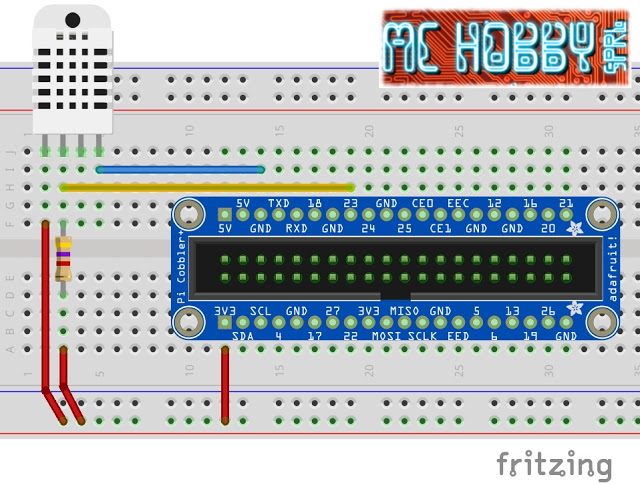
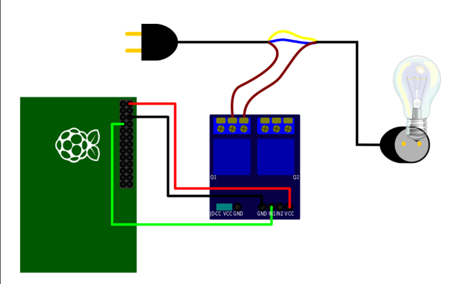

PARTIE ELECTRONIQUE
Ici est décrit tout ce qu'il faut savoir pour avoir de bonne base élèctronique pour créer votre serre
capteur AM2302
avant de commencer a coder nous allons avoir besoin d'un suport informatique qui puisse heberger un site, recuperer les differentes données de nos capteurs, ainsi qu'activer des relais.

mon premier capteur est un AM2302 capteur d'humidité et de température :
avec son cablage :
code qui recupere les donner du capteur hygrometrique et les envoie sur le serveur MySQL :
lien pour telecharger la library adafruit
et MySQLdb avec la commande : apt-get install python-mysqldb
import Adafruit_DHT
import MySQLdb
sensor = Adafruit_DHT.DHT22
pin = 21
humidity, temperature = Adafruit_DHT.read_retry(sensor, pin)
if humidity is not None and temperature is not None:
print('Temp={0:0.1f}*C Humidity={1:0.1f}%'.format(temperature, humidity))
else:
print('Echec de lecture. Essayez encore!')
bdd = MySQLdb.connect(host="localhost",user="root",passwd="root",db="serre") # remplacer les xxx et yyy par votre login et mdp mysql
req = bdd.cursor()
#envoi à la base de donnée
try:
req.execute("""insert into `test` (`Température`,`Humidité`) values (%s,%s)""",(temperature,humidity))
print('envoie terminer !')
bdd.commit()
except:
bdd.rollback()
#fermeture de la connexion
bdd.close()Les Relais

pour povoir afficher nos donnees partout dans le monde nous allons cree un serveur http via apache2 sur nore raspberry :
pour arroser,eclairer, ventiler ou bien rechaufer nos jolies plantes, nous allons utiliser un relai c'est un
interupteur commander electroniquement.
avec les branchemants suivant pour chaques objets:

apres avoir brancher notre relai sur la raspberry nous allons faire un petit programme en python pour
allumer ou eteindre ce relais :
#! /usr/bin/python
import RPi.GPIO as GPIO ## Import GPIO library
GPIO.setmode(GPIO.BOARD) ## Use board pin numbering
GPIO.setup(7, GPIO.OUT) ## Setup GPIO Pin 7 to OUT
GPIO.output(7,False) ## Turn on GPIO pin 7 et remplacer le False par un True pour pouvoir etteindre le relai
petit blog avec pas mal de petites fonction
tout ce si est bien beau mais maintenant commant allons nous interagire avec lui par notre page web ?
je vous laisse donc la magnifique site ainsi que sa video de notre cher Tommy Desrochers sur le sujet
ainsi que mon code personelle : (j'ai juste mis le tout dans un tableau)
‹td>lumieres‹/td>
‹form action="lumieres.php" method="post">
‹td>‹input type="submit" name="executer" value="ON" class="button primary" id="ON">‹/td>
‹td>‹input type="submit" name="executer" value="OFF" class="button primary" id="OFF">‹/td>
‹/form>
‹/tr >